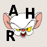

Childsplay
Dieser Artikel wurde für die folgenden Ubuntu-Versionen getestet:
Ubuntu 14.04 Trusty Tahr
Zum Verständnis dieses Artikels sind folgende Seiten hilfreich:
Childsplay  ist eine Sammlung unterschiedlicher Lernspiele für Kinder verschiedenster Altersgruppen. Je nach installierten Paketen enthält es Rechen-, Schreib-, Buchstaben-, Wortfindungs- und Merkspiele. Ziel ist es die Kinder auf spielerische Art und Weise zu fördern.
ist eine Sammlung unterschiedlicher Lernspiele für Kinder verschiedenster Altersgruppen. Je nach installierten Paketen enthält es Rechen-, Schreib-, Buchstaben-, Wortfindungs- und Merkspiele. Ziel ist es die Kinder auf spielerische Art und Weise zu fördern.
| Childsplay |
| Lernaktivität |
Installation¶
Zur Installation werden folgende Pakete benötigt [1]:
childsplay (universe)
childsplay-alphabet-sounds-de (universe)
 mit apturl
mit apturl
Paketliste zum Kopieren:
sudo apt-get install childsplay childsplay-alphabet-sounds-de
sudo aptitude install childsplay childsplay-alphabet-sounds-de
Benutzung¶
Nach erfolgreicher Installation kann das Programm mit dem Befehl childsplay gestartet werden [2]. Dem Benutzer stehen eine Reihe von Spielen zur Auswahl.
| Spiele | ||
| Icon | Schwierigkeit | Beschreibung |
| */** | Klassisches Memoryspiel bei dem die richtigen Bilderpaare gefunden werden müssen. (Die Bilder zeigen das Programm unter Lucid, unter Precise sind teilweise andere Figuren auf den Schaltflächen). | |
| */** | Memory mit Kleinbuchstaben. | |
|  | */** | Die Paare mit Großbuchstaben finden. |
| */** | Die richtigen Zahlen im Spiel zusammensuchen. | |
| */** | Finde die richtigen Paare von Geräuschen | |
| * | Maustraining - versuche die Fische zu treffen. | |
| */** | Klicke die gesprochenen Buchstaben und Zahlen an. | |
| * | Tastaturtraining - drücke die Taste des angezeigten Buchstabens. | |
| */** | Ein Bild muss wieder korrekt zusammengesetzt werden. | |
| * | Es werden Geräusche vorgespielt, welche dem dazugehörigen Bild zugeordnet werden müssen. | |
| * | Mit dem Alphabet der Tiere spielerisch Buchstaben erlernen und die passenden Tierlaute erfahren. | |
| * | Das Videospiel Pong. | |
| **/*** | In diesem Pacman-Clone müssen die Buchstaben eines vorgegebenen Wortes in der richtigen Reihenfolge gefressen werden. | |
| **/*** | Ziel ist es, die Kugel einzulochen. Mit der  rechten Maustaste wird gezielt und mit der rechten Maustaste wird gezielt und mit der  linken Taste gestoßen. Je länger diese gehalten wird, desto stärker ist der Stoß. linken Taste gestoßen. Je länger diese gehalten wird, desto stärker ist der Stoß. | |
Legende: * = leicht, ** = mittel, *** = schwer
Über gelangt man zur Hilfeseite des jeweiligen Spiels. Ein Würfel zeigt die gespielte Runde an. Über werden gesprochene Anweisungen wiederholt. Um ein Spiel oder das Programm zu beenden, betätigt man
Pong¶
In der Datei ~/.schoolsplay.rc/pongrc im Homeverzeichnis kann man eine Reihe an Einstellungsmöglichkeiten für das Spiel vornehmen [3].
Puzzle¶
Im Spiel können eigene Bilder verwendet werden. Diese im Homeverzeichnis nach ~/.schoolsplay.rc/my_images kopieren.
Problembehebung¶
Startoptionen¶
Um das Programm nicht im Vollbildmodus zu starten, muss man im Programmstarter /usr/share/applications/childsplay.desktop die Startparameter ändern. Dazu kopiert man diesen nach ~/.local/share/applications/childsplay.desktop und bearbeitet [3] ihn entsprechend.
| Startparameter | |
| Option | Beschreibung |
--fullscreen | Startet Childsplay im Vollbildmodus. |
--window | Startet das Programm in einem Fenster. |
--kioskmode | Startet das Programm mit eingeschränkten Benutzerrechten. |
Ein Liste weiterer Optionen findet man in den Manpages zu childsplay.
- Erstellt mit Inyoka
-
 2004 – 2017 ubuntuusers.de • Einige Rechte vorbehalten
2004 – 2017 ubuntuusers.de • Einige Rechte vorbehalten
Lizenz • Kontakt • Datenschutz • Impressum • Serverstatus -
Serverhousing gespendet von